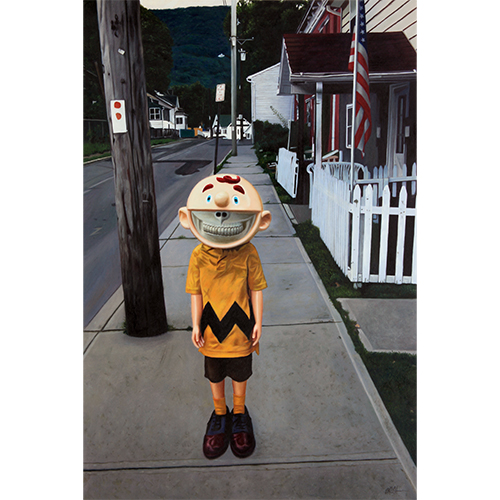

Exhibitions
Letters from America, London Pleasure Gardens; Black Rat Gallery (Black Rat Projects), presented by Corey Helford Gallery, London, United Kingdom, June 30–July 13, 2012.
Notes
The work is also documented on Corey Helford Gallery’s dedicated exhibition object page for Grin on the Fourth of July, under LETTERS FROM AMERICA, accessed April 6, 2026.